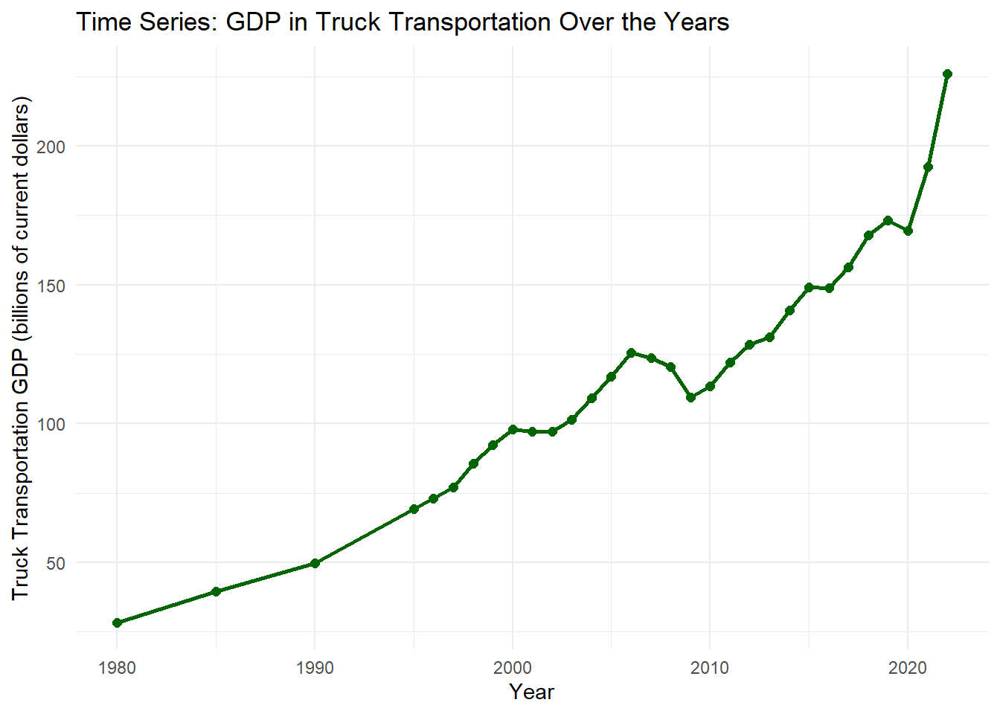

tibble [31 × 11] (S3: tbl_df/tbl/data.frame)
$ Year : num [1:31] 1980 1985 1990 1995 1996 ...
$ TOTAL U.S. GDP : num [1:31] 2788 4218 5800 7415 7838 ...
$ For-hire transportation services GDP, total: num [1:31] 103 137 173 232 241 ...
$ Air transportation : num [1:31] 13.1 19.3 31.3 46.2 46.9 ...
$ Rail transportation : num [1:31] 20.2 21 18.6 21.1 20.9 ...
$ Water transportation : num [1:31] 3.5 4 5.1 6.3 6.6 ...
$ Truck transportation : num [1:31] 28.4 39.4 49.7 69.3 73.1 ...
$ Transit and ground passenger transportation: num [1:31] 5.8 7.3 9 11.8 12.8 ...
$ Pipeline transportation : num [1:31] 5.1 7.3 6 6.7 7.1 ...
$ Other transportation and support activities: num [1:31] 20.2 29.3 39.9 51.6 54.3 ...
$ Warehousing and storage : num [1:31] 6.4 9.5 13 18.8 19.6 ...
Highlights the event on 2007-2008 and 2019-2022 In 2007, an economic crisis has shown that is called as the great recession. Then in 2019, the Covid-19 pandemic has started and spreading all around the world. In this analysis using the time series, we will see the impact they will cause to the U.S. Gross Domestic Product (GDP) Attributed to For-Hire Transportation Services.
mydata <- mydata %>%mutate(Year =as.numeric(Year),`Air transportation`=as.numeric(gsub(",", ".", `Air transportation`)))# Plot with ggplot2ggplot(mydata, aes(x = Year, y =`Air transportation`)) +geom_line(color ="lightblue", size =1) +geom_point(color ="lightblue", size =2) +labs(title ="Time Series: GDP in Air Transportation Over the Years",x ="Year",y ="Air Transportation GDP (in millions)" ) +theme_minimal()
Warning: Using `size` aesthetic for lines was deprecated in ggplot2 3.4.0.
ℹ Please use `linewidth` instead.
Key Insights for Air Transportation Over the Years There has been a significant decrease from 2019 to 2020. Covid-19 would be the reason of decrease in total GDP for air transportation. However other than that, there has been a decrease in 2000 to 2001 and 2007 to 2008. In 2007, there has been a recession in US, that also has impacted the other countries as well.
mydata <- mydata %>%mutate(Year =as.numeric(Year),`Rail transportation`=as.numeric(gsub(",", ".", `Rail transportation`)))# Plot with ggplot2ggplot(mydata, aes(x = Year, y =`Rail transportation`)) +geom_line(color ="brown", size =1) +geom_point(color ="brown", size =2) +labs(title ="Time Series: GDP in Rail Transportation Over the Years",x ="Year",y ="Rail Transportation GDP (in millions)" ) +theme_minimal()
Key Insights for Rail Transportation Over the Years In the rail transportation, the decrease that is easily notice is both 2008 to 2009 and 2019 to 2020, however the impact of the recession makes rail transportation to produce less GDP, rather than during Covid-19.
mydata <- mydata %>%mutate(Year =as.numeric(Year),`Water transportation`=as.numeric(gsub(",", ".", `Water transportation`)))# Plot with ggplot2ggplot(mydata, aes(x = Year, y =`Water transportation`)) +geom_line(color ="purple", size =1) +geom_point(color ="purple", size =2) +labs(title ="Time Series: GDP in Water Transportation Over the Years",x ="Year",y ="Water Transportation GDP (billions of current dollars)" ) +theme_minimal()
Key Insights for Water Transportation Over the Years Looking at the time series analysis for water transportation, it shows that from 2008 to 2012 there’s a constant decreasing trends where they produce less and less GDP. This decrease that happen might be the effect of the recession that impacted the world.
mydata <- mydata %>%mutate(Year =as.numeric(Year),`Truck transportation`=as.numeric(gsub(",", ".", `Truck transportation`)))# Plot with ggplot2ggplot(mydata, aes(x = Year, y =`Truck transportation`)) +geom_line(color ="darkgreen", size =1) +geom_point(color ="darkgreen", size =2) +labs(title ="Time Series: GDP in Truck Transportation Over the Years",x ="Year",y ="Truck Transportation GDP (billions of current dollars)" ) +theme_minimal()

Key Insights for Truck Transportation Over the Years From 2007 to 2009, a slight slowdown in GDP growth is noticeable, reflecting the impact of the Great Recession. After 2009, there’s a gradual but steady recovery, with notable growth starting around 2015. Covid-19 in 2020 results in a brief decline in GDP, followed by a strong recovery as demand for goods transportation surges.
mydata <- mydata %>%mutate(Year =as.numeric(Year),`Transit transportation`=as.numeric(gsub(",", ".", `Transit and ground passenger transportation`)))# Plot with ggplot2ggplot(mydata, aes(x = Year, y =`Transit and ground passenger transportation`)) +geom_line(color ="pink", size =1) +geom_point(color ="pink", size =2) +labs(title ="Time Series: GDP in Transit & Ground Passenger Transportation Over the Years",x ="Year",y ="Transit and ground passenger Transportation GDP (billions of current dollars)" ) +theme_minimal()
Key Insights for Tranist & Ground Passenger Transportation Over the Years Transit and ground passenger transportation experiences some slowdown during the Great Recession (2007-2009), indicating reduced passenger demand. After 2009, the GDP growth picks up gradually until a sharp decline in 2020 due to Covid-19 restrictions.The impact of Covid-19 is significant, with a slow recovery afterward, reflecting lingering effects on passenger transport demand.
mydata <- mydata %>%mutate(Year =as.numeric(Year),`Pipeline transportation`=as.numeric(gsub(",", ".", `Pipeline transportation`)))# Plot with ggplot2ggplot(mydata, aes(x = Year, y =`Pipeline transportation`)) +geom_line(color ="peachpuff", size =1) +geom_point(color ="peachpuff", size =2) +labs(title ="Time Series: GDP in Pipeline Transportation Over the Years",x ="Year",y ="Pipeline Transportation GDP (billions of current dollars)" ) +theme_minimal()
Key Insights for Pipeline Transportation Over the Years The Great Recession in 2007 to 2009 shows only a mild impact on GDP, with the sector maintaining a steady upward trend despite economic challenges.After 2009, growth accelerates gradually, reflecting stable demand and resilience in pipeline transportation.A brief decline around 2020 due to Covid-19 is observed, followed by a quick recovery and continued growth.
mydata <- mydata %>%mutate(Year =as.numeric(Year),`Other transportation and support activities`=as.numeric(gsub(",", ".", `Other transportation and support activities`)))# Plot with ggplot2ggplot(mydata, aes(x = Year, y =`Other transportation and support activities`)) +geom_line(color ="chartreuse", size =1) +geom_point(color ="chartreuse", size =2) +labs(title ="Time Series: GDP in Other Transportation and Support Activities Over the Years",x ="Year",y =" Other Transportation and Support Activities GDP (billions of current dollars)" ) +theme_minimal()
Key Insights for Other Transportation & Support Activities Over the Years From 2007 to 2009, GDP in this sector shows a slight dip, reflecting the economic strain of the Great Recession. There is a steady increase in GDP after 2009, with a significant acceleration in growth beginning around 2015. A noticeable drop appears around 2020 due to Covid-19, but the sector quickly recovers and continues to rise afterward.
mydata <- mydata %>%mutate(Year =as.numeric(Year),`Warehousing and storage`=as.numeric(gsub(",", ".", `Warehousing and storage`)))# Plot with ggplot2ggplot(mydata, aes(x = Year, y =`Warehousing and storage`)) +geom_line(color ="grey", size =1) +geom_point(color ="grey", size =2) +labs(title ="Time Series: GDP in Warehousing and Storage Over the Years",x ="Year",y =" Warehousing and Storage GDP (billions of current dollars)" ) +theme_minimal()
Key Insights for Warehousing & Storage Over the Years GDP growth in warehousing and storage remains largely unaffected during the 2007-2009 recession, with a consistent upward trend. From 2009, the sector experiences steady growth, with demand likely driven by e-commerce and inventory needs. In 2020 indicates the impact of Covid-19, but recovery is quick, and growth continues at an accelerated rate post-pandemic.
Conclusion Most of them in 2019-2020 has a decrease in their GDP due to Covid-19 that happened all around the world. Each of the graph emphasizes the patterns of adaptation and recovery across several transportation sectors.
6.2 Week 3
6.2.1 Trends in Transportation GDP
library(readxl)library(ggplot2)library(plotly)
Attaching package: 'plotly'
The following object is masked from 'package:ggplot2':
last_plot
The following object is masked from 'package:stats':
filter
The following object is masked from 'package:graphics':
layout
# Load necessary librarieslibrary(ggplot2)library(plotly)library(reshape2)# Transpose the data and convert row names to a columnmydata <-as.data.frame(t(mydata))colnames(mydata) <- mydata[1, ] # Set first row as column namesmydata <- mydata[-1, ] # Remove the first row# Convert 'Year' back to row names (assuming first column is now 'Year')mydata$Year <-rownames(mydata)rownames(mydata) <-NULL# Reshape data into long formatmydata_long <-melt(mydata, id.vars ="Year", variable.name ="Sector", value.name ="GDP")# Convert Year to numeric (if not already)mydata_long$Year <-as.numeric(mydata_long$Year)# Plot using ggplot2p <-ggplot(mydata_long, aes(x = Year, y = GDP, color = Sector)) +geom_line(size =1) +labs(title ="Overall GDP Trends in Transportation Sectors (1980–2022)",x ="Year",y ="GDP (billions of current dollars)",color ="Sector" ) +theme_minimal()# Make the plot interactivep_interactive <-ggplotly(p)p_interactive
library(ggplot2)library(plotly)p <-ggplot(mydata, aes(x = Year)) +geom_line(aes(y =`Air transportation`, color ="Air Transportation"), size =1) +geom_line(aes(y =`Rail transportation`, color ="Rail Transportation"), size =1) +geom_line(aes(y =`Water transportation`, color ="Water Transportation"), size =1) +geom_line(aes(y =`Truck transportation`, color ="Truck Transportation"), size =1) +geom_line(aes(y =`Transit and ground passenger transportation`, color ="Transit & Ground Passenger Transportation"), size =1) +geom_line(aes(y =`Pipeline transportation`, color ="Pipeline Transportation"), size =1) +geom_line(aes(y =`Other transportation and support activities`, color ="Other Transportation & Support Activities"), size =1) +geom_line(aes(y =`Warehousing and storage`, color ="Warehousing & Storage"), size =1) +labs(title ="Overall GDP Trends in Transportation Sectors (1980–2022)",x ="Year",y ="GDP (billions of current dollars)",color ="Sector" ) +theme_minimal()p_interactive <-ggplotly(p)p_interactive
6.2.1.2 Key Insights for Overall GDP Trends in Tranasportation Sectors Over the Years
6.2.1.3 Air Transportation
Experienced steady growth until 2019, followed by a sharp decline in 2020 due to COVID-19. Recovery begins post-2021, driven by rising passenger and cargo demand.
6.2.1.4 Rail Transportation
GDP remains relatively stable with minor fluctuations. The Great Recession and COVID-19 caused slight dips, but the sector generally shows resilience in freight transport.
6.2.1.5 Water Transportation
Exhibits slower growth compared to other sectors, with noticeable declines during major economic downturns. Recovery remains gradual post-2020.
6.2.1.6 Truck Transportation
Shows consistent growth, slightly slowed by the Great Recession and COVID-19. The sector’s strong recovery highlights its critical role in freight logistics.
6.2.1.7 Transit & Ground Passenger Transportation
Faced significant downturns during the Great Recession and COVID-19 due to reduced passenger demand. Recovery is ongoing as restrictions ease.
6.2.1.8 Pipeline Transportation
Shows steady growth with minimal impact from economic downturns. This reflects stable demand for energy transport.
6.2.1.9 Other Transportation & Support Activities
Rapid growth post-2000, underpinned by increasing logistics and supply chain demand. Quick recovery after economic disruptions highlights sector resilience.
6.2.1.10 Warehousing & Storage
A standout performer with consistent growth, accelerated by the e-commerce boom. The sector remains largely unaffected by economic crises, reflecting its essential role in modern supply chains.
6.2.1.11 Impact of The Great Recession
Focusing from 2007 through 2012 to capture the Great Recession and initial recovery.
# Filter data for Great Recession periodrecession_data <- mydata %>%filter(Year >=2007& Year <=2012)ggline(recession_data, x ="Year", y ="Air transportation", add ="point", color ="blue", ylab ="GDP (billions of current dollars)", xlab ="Year",title ="Air Transportation GDP During Great Recession (2007–2012)")
6.2.1.12 Key Insights for Air Transportation (2007-2012)
During the Great Recession (2007–2012), air transportation GDP experienced a dip in 2009, reflecting reduced air travel demand due to the economic downturn. However, the sector showed a steady recovery starting in 2010, driven by gradual improvements in both passenger and cargo transport.
p_rail <-ggline(recession_data, x ="Year", y ="Rail transportation", add ="point", color ="#3CB371", ylab ="GDP (billions of current dollars)", xlab ="Year",title ="Rail Transportation GDP During Great Recession")ggplotly(p_rail)
6.2.1.13 Key Insights for Rail Transportation (2007-2012)
Rail transportation GDP declined significantly in 2009 but recovered strongly by 2012. This reflects a temporary reduction in freight activity during the recession, followed by a robust rebound as economic conditions improved.
p_water <-ggline(recession_data, x ="Year", y ="Water transportation", add ="point", color ="#D43790", ylab ="GDP (billions of current dollars)", xlab ="Year",title ="Water Transportation GDP During Great Recession")ggplotly(p_water)
6.2.1.14 Key Insights for Water Transportation (2007-2012)
Water transportation GDP peaked in 2008 but declined sharply thereafter, indicating the impact of reduced global trade during the recession. Recovery was slower compared to other sectors, with GDP continuing to decline through 2012.
p_truck <-ggline(recession_data, x ="Year", y ="Truck transportation", add ="point", color ="deepskyblue", ylab ="GDP (billions of current dollars)", xlab ="Year",title ="Truck Transportation GDP During Great Recession")# Make it interactiveggplotly(p_truck)
6.2.1.15 Key Insights for Truck Transportation (2007-2012)
Truck transportation GDP experienced a decline in 2009, reflecting the recession’s impact on freight demand. However, it showed a strong recovery starting in 2010, underscoring the sector’s critical role in goods movement as economic activity picked up.
p_transit <-ggline(recession_data, x ="Year", y ="Transit and ground passenger transportation", add ="point", color ="turquoise", ylab ="GDP (billions of current dollars)", xlab ="Year",title ="Transit & Ground Passenger Transportation GDP During Great Recession")# Make it interactiveggplotly(p_transit)
6.2.1.16 Key Insights for Tranist & Ground Passenger Transportation (2007-2012)
This sector showed steady growth throughout the Great Recession, with no significant decline. Despite economic challenges, it likely maintained stable demand due to its essential role in daily commuting and public transportation services.
p_pipeline <-ggline(recession_data, x ="Year", y ="Pipeline transportation", add ="point", color ="darkgreen", ylab ="GDP (billions of current dollars)", xlab ="Year",title ="Pipeline Transportation GDP During Great Recession")ggplotly(p_pipeline)
6.2.1.17 Key Insights for Pipeline Transportation (2007-2012)
Pipeline transportation GDP demonstrated resilience during the recession, with consistent growth from 2007 to 2012. This reflects the steady demand for energy transport, even during periods of economic downturn.
p_others <-ggline(recession_data, x ="Year", y ="Other transportation and support activities", add ="point", color ="tan", ylab ="GDP (billions of current dollars)", xlab ="Year",title ="Other Transportation & Support Activitives GDP During Great Recession")# Make it interactiveggplotly(p_others)
6.2.1.18 Key Insights for Other Transportation & Support Activities (2007-2012)
GDP for this sector peaked in 2008 before experiencing a sharp decline in 2009, reflecting the immediate impact of the Great Recession. However, it rebounded quickly from 2010 onwards, showcasing its resilience as economic activity resumed.
p_warehousing_storage <-ggline(recession_data, x ="Year", y ="Warehousing and storage", add ="point", color ="purple", ylab ="GDP (billions of current dollars)", xlab ="Year",title ="Warehousing and Storage GDP During Great Recession")ggplotly(p_warehousing_storage)
6.2.1.19 Key Insights for Warehousing & Storage (2007-2012)
The warehousing and storage sector displayed steady growth throughout the Great Recession period, with no significant downturn. This highlights its critical role in supporting supply chains, even during economic slowdowns, as demand for storage and inventory management remained strong.
6.2.1.20 COVID-19
# Filter data for COVID-19 periodcovid_data <- mydata %>%filter(Year >=2019& Year <=2022)library(tidyr)
Attaching package: 'tidyr'
The following object is masked from 'package:reshape2':
smiths
covid_long <- covid_data %>%pivot_longer(cols =c("Air transportation", "Rail transportation", "Water transportation", "Truck transportation","Transit and ground passenger transportation","Pipeline transportation", "Other transportation and support activities","Warehousing and storage"),names_to ="Sector", values_to ="GDP")p_covid <-ggline(covid_long, x ="Year", y ="GDP", color ="Sector", add ="point", ylab ="GDP (billions of current dollars)", xlab ="Year",title ="GDP Trends by Transportation Sectors During COVID-19 (2019–2022)")ggplotly(p_covid)
6.2.1.21 COVID-19 Impact on all of the transportation sectors
2020 marked a critical year with substantial declines across most sectors, reflecting the immediate impact of the pandemic.On 2021–2022, there are strong recovery trends are visible in key sectors like air transportation, truck transportation, and warehousing, underscoring their essential roles in the post-pandemic economy. Sectors with slower recovery, such as transit and water transportation, highlight areas where pandemic-induced changes (e.g., remote work, disrupted trade) had longer-lasting effects.
6.3 Week 4
Interactive Visualization with Shiny
The following Shiny app allows for interactive exploration of GDP trends across transportation sectors during significant economic periods like the Great Recession and COVID-19.
6.3.0.1 Access the Interactive Shiny App
To interact with the Shiny app and explore trends, click the link below:
── Conflicts ────────────────────────────────────────── tidyverse_conflicts() ──
✖ plotly::filter() masks dplyr::filter(), stats::filter()
✖ dplyr::lag() masks stats::lag()
ℹ Use the conflicted package (<http://conflicted.r-lib.org/>) to force all conflicts to become errors
library(plotly)library(readxl)# Define the file pathFILE_PATH <-"C:/Users/toluf/OneDrive/Desktop/Dynamic 2/MyShinyAppTako/GDPDataSetscopy.xlsx"ui <-page_sidebar(title ="Transportation Variables Trends",theme =bs_theme(bootswatch ="flatly"),sidebar =sidebar(uiOutput("variable_selector"),checkboxInput("show_standardized", "Show Standardized Values", value =FALSE) ),card(card_header("Transportation Trends During Great Recession (2007-2012)"),plotlyOutput("recession_plot", height ="400px") ),card(card_header("Transportation Trends During COVID-19 (2019-2022)"),plotlyOutput("covid_plot", height ="400px") ))server <-function(input, output, session) {# Read data directly from file path data <-reactive({ df <-read_excel(FILE_PATH)if (!("Year"%in%names(df))) { df <- df %>%rename(Year =1) }return(df) })# Define the preferred variables preferred_vars <-c("Air transportation" )# Dynamic UI for variable selection output$variable_selector <-renderUI({req(data()) vars <-setdiff(names(data()), "Year")# Try to select preferred variables if they exist in the data default_selected <-intersect(preferred_vars, vars)if (length(default_selected) ==0) { default_selected <- vars[1:min(5, length(vars))] }checkboxGroupInput("variables", "Select Variables:",choices = vars,selected = default_selected) })# Helper function to create plots create_crisis_plot <-function(data, year_range, crisis_name) {req(input$variables)# Filter for specific years plot_data <- data %>%filter(Year >= year_range[1], Year <= year_range[2])if (input$show_standardized) {# Create standardized data plot_data[input$variables] <-scale(plot_data[input$variables]) plot_data <- plot_data %>%pivot_longer(cols =all_of(input$variables),names_to ="Variable", values_to ="Value") y_label <-"Standardized Value\n(mean=0, sd=1)" } else { plot_data <- plot_data %>%pivot_longer(cols =all_of(input$variables),names_to ="Variable", values_to ="Value") y_label <-"GDP in Billion" }# Create the plot p <-ggplot(plot_data) +# Add crisis period rectangleannotate("rect", xmin = year_range[1], xmax = year_range[2],ymin =-Inf, ymax =Inf,alpha =0.1, fill ="gray50") +# Add crisis labelannotate("text", x =mean(year_range), y =max(plot_data$Value), label = crisis_name,alpha =0.7, fontface ="bold") +# Add the lines for variablesgeom_line(aes(x = Year, y = Value, color = Variable), size =1.2) +# Add points for each valuegeom_point(aes(x = Year, y = Value, color = Variable,text =paste("Year:", Year,"\nVariable:", Variable,"\nValue:", round(Value, 2))), size =2) +# Set specific x-axis limits and breaksscale_x_continuous(limits = year_range,breaks = year_range[1]:year_range[2]) +theme_minimal() +labs(y = y_label, x ="Year") +theme(legend.position ="right",panel.grid.major =element_line(color ="white"),panel.grid.minor =element_line(color ="white"))# Convert to plotly with custom hover textggplotly(p, tooltip ="text") }# Recession plot output$recession_plot <-renderPlotly({req(data())create_crisis_plot(data(), c(2007, 2012), "Great Recession") })# COVID plot output$covid_plot <-renderPlotly({req(data())create_crisis_plot(data(), c(2019, 2022), "COVID-19 Period") })}shinyApp(ui, server)
Shiny applications not supported in static R Markdown documents